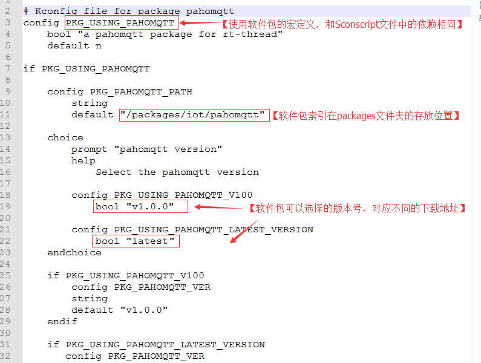
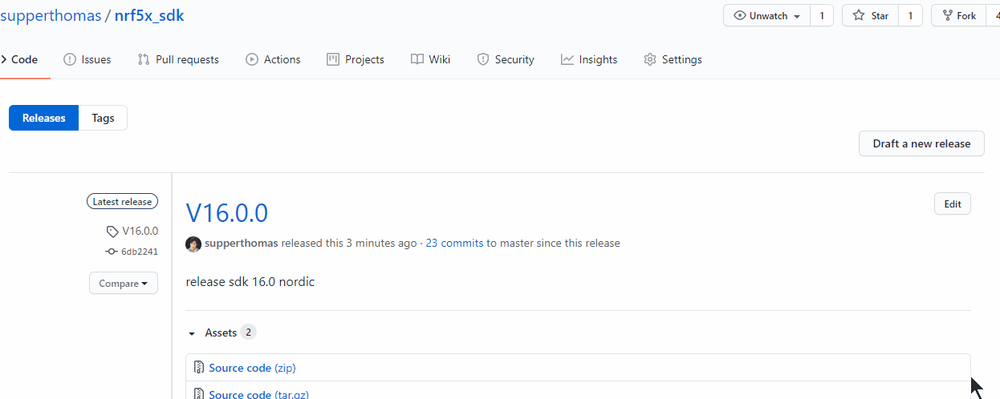
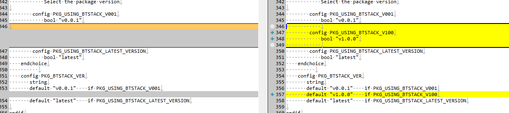

8. 软件包制作小计
之前写了一份制作指南，可以先看这个rtthread 软件包制作
本文记录一些软件包的小笔记，方便后续增加软件包，或者管理软件包
首先找到RTTHREAD官方的关于软件包制作相关的文章，研读一遍，在代码贡献篇的软件包开发指南。
在官方的packag里面要添加Kconfig和package.json
在自己的软件包里面需要添加Sconscript
建议
将Kconfig放到软件包中备份，方便后续恢复到特定版本。
8.1. Kconfig
不懂的先研读一下RTTHREAD文档的kconfig相关的内容，
这边要补充的是一些特殊的特殊用法
首先软件包中的需要一个宏定义：

这里25行有个比较重要的就是，如果添加版本号，不仅在choice里面添加版本号
还要在最下面添加一个PKG_PAHOMQTT_VER相对应的宏
写法可以类似于下面的写法
config PKG_NRF5X_SDK_VER
string
default "v13.0.0" if PKG_USING_NRF5X_SDK_V1300
default "v16.0.0" if PKG_USING_NRF5X_SDK_V1600
default "v16.1.0" if PKG_USING_NRF5X_SDK_V1610
default "latest" if PKG_USING_NRF5X_SDK_LATEST_VERSION
PKG_NRF5X_SDK_VER这个宏比较重要。
会和package.json里面的version相对应。
RTTHREAD脚本里面有些特殊处理。
这个default可以让一个配置有多种defalt值，这个可以用在不同的开发板上。
select 的内容只能是bool型，不能是int型
select BUFSIZE=10像这种写法是非法的。可以多用depends on 代替if
参考资料
https://www.kernel.org/doc/Documentation/kbuild/kconfig-language.txt
8.2. package.json
这里面需要注意的是发布版本的时候
{
"version": "v1.0.0",
"URL": "https://github.com/wuhanstudio/elapack.git",
"filename": "elapack-1.0.0.zip",
"VER_SHA": "0f6c51f2607f74d2940c18db7fa2b286533c6b4a"
},
这里的URL可以默认就是你的软件包的地址不用修改，VER_SHA要和你的tag版本的HASH值对应
具体看下面如何release版本
这里的version要和上面的Kconfig中对应
8.3. Sconscript
需要提醒的是
对于group，如下所示
group = DefineGroup('ABC', src, depend = [''], LIBS = LIBS, LIBPATH=LIBPATH)
Return('group')
如果想要有多个group，可以参考如下写法：
group = DefineGroup('ABC', src, depend = [''], LIBS = LIBS, LIBPATH=LIBPATH)
group = DefineGroup('DEF', def_src, depend = [''], LIBS = LIBS, LIBPATH=LIBPATH)
Return('group')
8.4. submodule
添加指定submodule
git submodule add https://github.com/NordicSemiconductor/nrfx.git <local path>
这个命令可以添加submodule
-b branch可以指定特定branch
查看submodule：
git submodule
删除submodule
首先，需要删除 .git/config 和 .gitsubmodle 文件里submodule相关的部分，然后执行：
git rm --cached <local path>
git clone
https://blog.csdn.net/wkyseo/article/details/81589477
你当时拉的submodule的时候的commit，后面都会以该commit来处理，及时submodule的那边代码有所更新，也不会影响到该submodule的代码。这样也是submodule的一个好处。
如果单独使用的话，拉取submodule的代码：
git submodule init //初始化子模块
git submodule update //更新子模块
更新子模块到最新的代码: 先进入子模块，然后切换到需要的分支，这里是master分支，然后对子模块pull，这种方法会改变子模块的分支
这里也可以checkout到某次commit提交
cd project3/moduleA
git checkout master
更新完没啥问题，可以直接commit该文件夹提交即可。
8.5. 软件包如何release版本
本节主要讲解如何release软件包中的版本号
github发布tag和release
先在软件包中新建一个tag
git tag v1.0.0
把tag上传到github上
git push origin v1.0.0
在github上点击release

找到该tag的commit的hash值类似于4c61f272d8532ce89801be503360afd5bc62d7b3
拷贝该tag的连接地址：
例如：
https://github.com/supperthomas/RTT_PACKAGE_BTSTACK/archive/refs/tags/v1.0.0.zip
(官方建议用zip连接地址，这样在git提交代码的时候不会相互影响，package包只是源文件)
这个比较重要
修改env软件包中的信息
Kconfig
Kconfig中要添加一个类似的信息，注意，需要添加两个地方

package.json
添加如下版本信息，注意这里的VER_SHA不需要填，url选择对应的zip下载链接即可
{
"version": "v1.10",
"URL": "https://github.com/RT-Thread-packages/micropython/archive/1.10.zip",
"filename": "micropython-1.10.zip",
"VER_SHA": ""
},
提交Kconfig和package.json到github
测试完成之后将修改的Konfig和package.json提交到github
后续开发
后续开发直接在branch上面开发即可，等到release版本的时候，将branch merge到master主分支上，再参考上述操作再执行一次
软件包制作建议
默认官方的RT-THREAD package中的版本号默认使用最新的稳定的版本，而不是latest版本（方便后续更新）
每次Kconfig如果改动比较大的话，一定要加个版本NUM来区分一下
if PKG_BTSTACK_VER_NUM >= 0x10000
endif
config PKG_BTSTACK_VER_NUM
hex
default 0x99999 if PKG_USING_BTSTACK_LATEST_VERSION
default 0x10000 if PKG_USING_BTSTACK_V100
default 0x00001 if PKG_USING_BTSTACK_V001
建议每次将Kconfig和版本号一起打包，放到软件包下面
建议新功能在branch上修改
release 版本如果有bug，修改tag，
软件包readme里面尽可能保留最后一次运行ok的rtthread版本号。